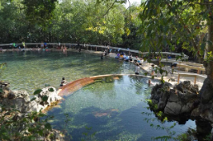
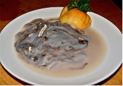
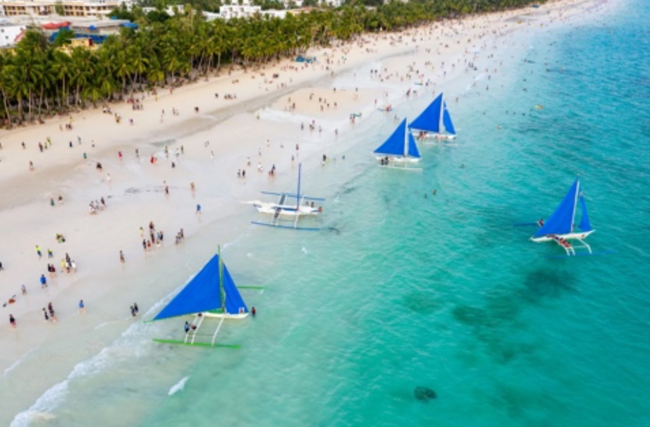
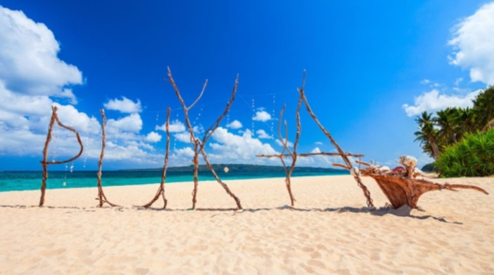

üå¥Discover Palawan: The Philippines‚Äô Last Frontier
Palawan is a tropical paradise known for its crystal-clear waters, dramatic limestone cliffs, and lush jungles. Whether you're an adventurer, nature lover, or just looking to unwind, Palawan has something for everyone.
Must-Visit Spots
El Nido
Famous for its stunning lagoons, hidden beaches, and island-hopping tours.
Coron
A diver’s dream with WWII shipwrecks, Kayangan Lake, and hot springs.
Puerto Princesa
Home to the Underground River, one of the New 7 Wonders of Nature.
Must Try Foods
Tamilok
This unique dish is made from a woodworm found in mangrove trees. It's often served raw with vinegar and spices, offering a tangy and earthy flavor.
Seafood
As an island province, Palawan boasts a wide array of fresh seafood. Popular choices include tuna, shrimp, blue marlin, crab, lobster, seabass, and squid, prepared in various local styles.
Crocodile Sisig
A spin on the traditional pork sisig, this dish features crocodile meat cooked with onions, chili, and other spices, resulting in a smoky and slightly gamey flavor.
Kinabuch's Grill and Bar
This restaurant in Puerto Princesa is a great place to try Tamilok and Crocodile Sisig.
üå¥Discover Cebu: The Queen City of the South
Cebu is a vibrant island that perfectly blends city life, history, nature, and beaches. From centuries-old churches to world-class diving spots, Cebu is a must-visit for any traveler in the Philippines.
Must-Visit Spots
Kawasan Falls
A stunning multi-layered waterfall in Badian, perfect for canyoneering and swimming.
Oslob
Famous for whale shark watching and nearby Tumalog Falls.
Moalboal Sardine Run
Swim with thousands of sardines just a few meters off the shore in Panagsama Beach. No boat needed, just snorkel and enjoy the magic!
Bantayan Island
A peaceful island escape with powdery white sand and crystal-clear water.

Tops Lookout
Enjoy panoramic views
Must Try Foods
Lechon Cebu
Known as the best lechon (roast pig) in the Philippines! Where to try: Rico's Lechon, CNT Lechon, or House of Lechon in Cebu City.
Puso (Hanging Rice)
Rice wrapped in woven coconut leaves, perfect with grilled dishes. Where to try: local carinderias, BBQ stalls, or paired with lechon.
Ngohiong
Cebu's version of spring rolls with a flavorful twist. Where to try: Doming's Ngohiong or local eateries in the city.
üå¥Discover Bohol: Nature, Adventure, and Heritage
Must-Visit Spots
Chocolate Hills
Over 1,000 grass-covered hills that turn brown in the dry season. It’s Bohol’s most iconic attraction!
Tarsier Sanctuary
Visit one of the world’s smallest primates at the Philippine Tarsier Conservation Area in Corella.
Loboc River
Enjoy a peaceful river cruise with a buffet meal and live music onboard. As well as Kayaking.
Panglao Island
Famous for white sand beaches, island hopping, and diving spots like Balicasag Island.
Must Try Foods
Peanut Kisses
A crunchy, sweet meringue cookie made with local peanuts. Where to get: Souvenir shops or Island City Mall in Tagbilaran.
Calamay
A sticky sweet treat made from glutinous rice, coconut milk, and brown sugar, packed in coconut shells. Where to get: Baclayon Market or local souvenir stands.
Organic Ice Cream
Homemade, coconut-milk sweetened scoops served in cassava “cabcab” cones. Where to get: The Buzz Café and The Buzzz Ice Cream Stall.
üå¥Explore Boracay: White Beaches, Island Vibes & Foodie Paradise
Boracay's stunning white-sand shores, vibrant marine activities, and laid-back nightlife make it a bucket-list destination.
White Beach (Stations 1-3)
The iconic stretch of powdery sand, perfect for sunbathing, swimming, and sunset strolls.
Puka Shell Beach
A quieter alternative at the northern tip, known for its natural shells and relaxed vibe.
Willy's Rock Sanctuary
A scenic rock chapel landmark that makes for a great photo backdrop.
Paraw Sailing at Sunset
Catch one of Boracay’s traditional outriggers gliding across the horizon at dusk.
Other Popular Activities:
- Helmet Diving
- Scuba Diving
- Snorkeling
- Paddleboarding
- Jet Skiing
- Banana Boat Ride
- Parasailing
- Kite Surfing (at Bulabog Beach)
- ATV Island Tour
- Zipline and Cable Car
- Spa and Massage by the Beach
- Sunset Cruise
- Pub Crawl
- Fire Dancing Show
- Henna Tattoos
- Shopping at D'Mall
- Sandcastle Building
- Yoga on the Beach
- Mermaid Swimming Experience
Must Try Foods
Shaved Ice
A popular Filipino dessert with shaved ice, sweet beans, fruits, leche flan, ube, and ice cream. Where to get: Coco Mama at D’Mall

Tropical Shake
Boracay is famous for tropical shakes like mango, watermelon, banana, and avocado. Where to get: Jonah’s Fruit Shake (Station 1 or 2)
Seafood from D'Talipapa
Choose your own fresh seafood (crabs, prawns, squid, fish, lobster) at the market and have it cooked at nearby restaurants—grilled, fried, in butter or sinigang. Where to get: D’Talipapa Market (Station 2)